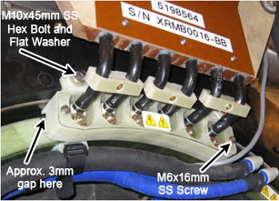

Illustration 11: Busbar Safety Cover - 3mm Gap

| NOTE: | Check and make sure the safety cover does not touch the XRMB coil (there should be approximately 3mm gap between the two). If they are touching, insert a G10 flat washer between the turtle ring (black plastic flange ring) and the base part of the safety cover. |